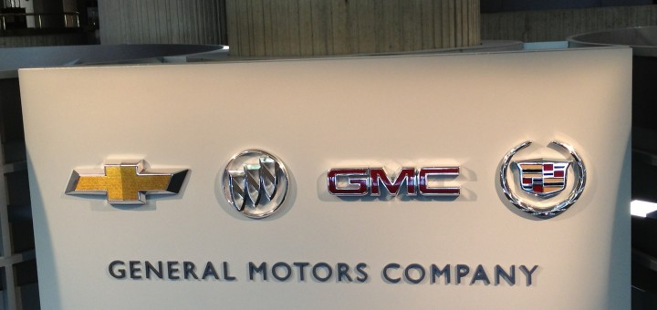

General Motors Company (GMC o simplemente GM) es una compañía estadounidense que fabrica automóviles, camiones y motores.
Fue fundada en 1908 con el nombre de General Motors Corporation y reestructurada a partir del año 2009 bajo su actual denominación.
Su sede central se encuentra en la ciudad de Detroit, Míchigan.
Tras varios años al frente de la producción mundial de automóviles, en 2009 perdió su liderazgo como resultado de una fuerte crisis,
que desembocó en la quiebra de la General Motors Corporation y dio lugar a la fundación de la General Motors Company.
General Motors tiene una extensa historia en numerosas formas de automovilismo. Vehículos de la mayoría de las marcas de GM han sido representados en competición,
donde quizá Chevrolet es el más prominente. En particular,
el Chevrolet Corvette ha sido popular y exitoso en carreras internacionales de gran turismo. GM también es un suministrador de componentes de carrera, como motores, transmisiones y electrónica.
Marcas que pertenecen a este grupo
A este grupo pertenecen diversas marcas, las más importantes son:
- Chevrolet
- Cadillac
- Hummer
- Buick
- Wuling Motors
- GMC

Volver 3 curiosidades y datos sorprendentes de GM
1. GM ha suministrado coches para franquicias famosas como Transformers, donde los Autobots son modelos Chevrolet y GMC.
2. La Chevrolet Impala de 1964 es un ícono cultural, conocida tanto en la música como en el cine.
3. En 1944, GM fabricó tanques anfibios durante la Segunda Guerra Mundial, lo que le valió un reconocimiento militar.